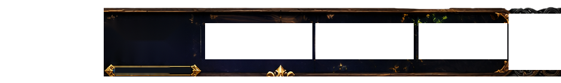
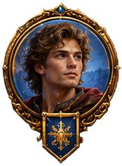
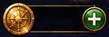
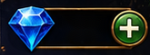
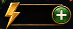
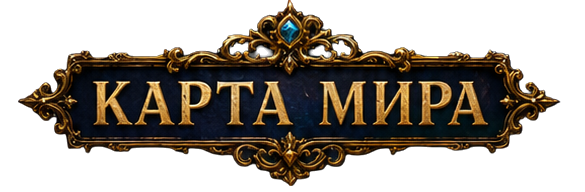

World Map — Twenty Regions
Design proposal using your chapter document and Scenario artwork. Swipe upward inside the map to reveal later chapters. This is an interactive browser preview, not a Unity implementation.


Иван
Уровень 28

12 540

350

25/30

20 глав · листайте вверх ↑The progress selector shows design examples only. The current game contains authored levels for Chapter 1. Later regions must remain unavailable in production until their content and unlock requirements exist.
Design and implementation notes · Confirmed 20-chapter list · Original reference